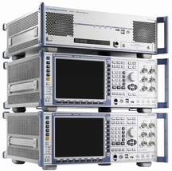
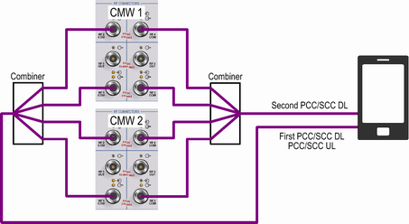

Some carrier aggregation scenarios require a multi-CMW test setup, comprising one R&S CMWC plus several R&S CMW.

The instruments are connected to each other via their rear panels. This rear panel cabling is identical for all multi-CMW test setups. For details, refer to the R&S CMWC documentation.
The required RF cabling depends on the scenario and on the RF antenna configuration of the DUT.
The following RF cabling example is suitable for DL CA with four carriers plus MIMO nx2 (eight downlinks, no co-location) and a UE with only two antenna connectors. One antenna is used for the first downlink of each carrier and for the uplinks (UL CA with two carriers). The second antenna is used for the second downlink of each carrier.

- Connect the first DUT antenna (UL + first DL) to the port AC.
- Connect the second DUT antenna (second DL) to the port BC.
- Connect RF 1 COM and RF 2 COM of both R&S CMW to the ports A1 to A4, in any order.
- Connect RF 3 COM and RF 4 COM of both R&S CMW to the ports B1 to B4, in any order.
When configuring the RF settings, consider that the external combiner increases the external attenuation.